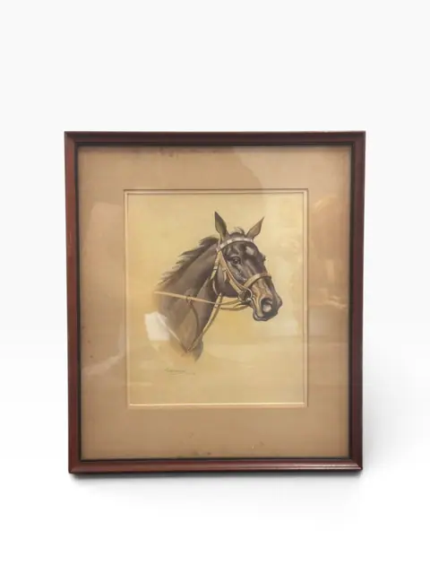
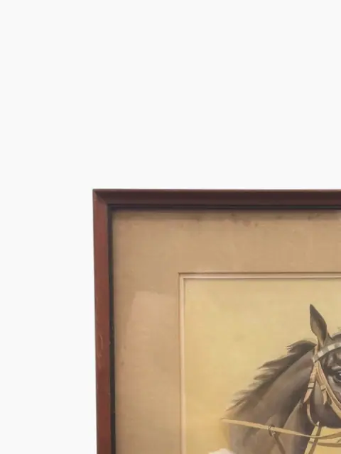
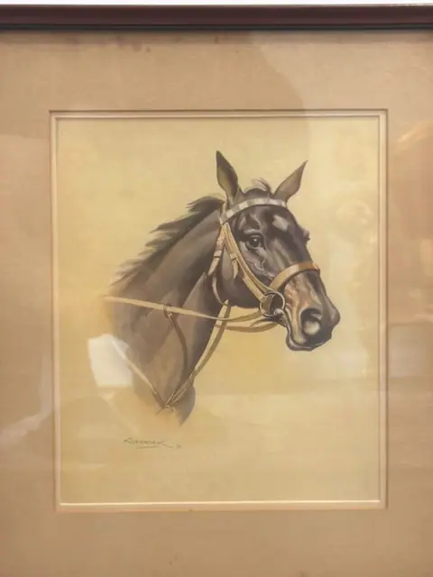
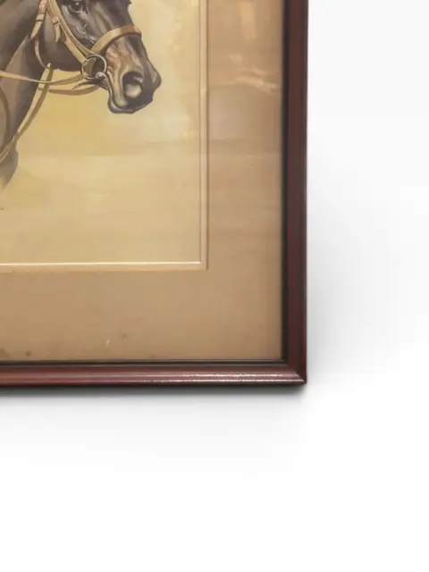
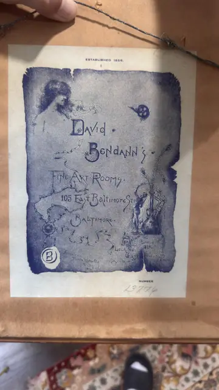
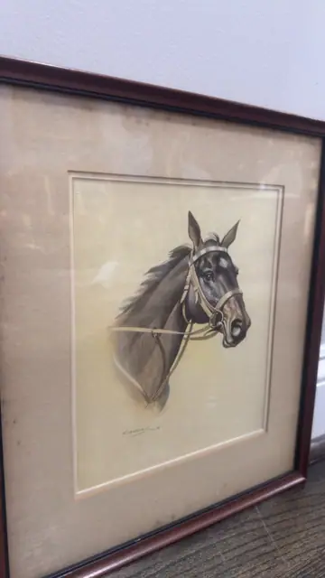
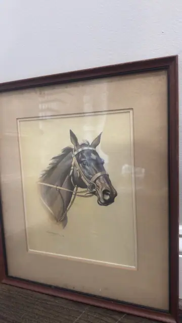
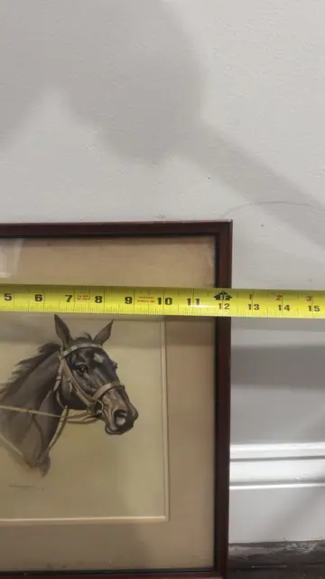
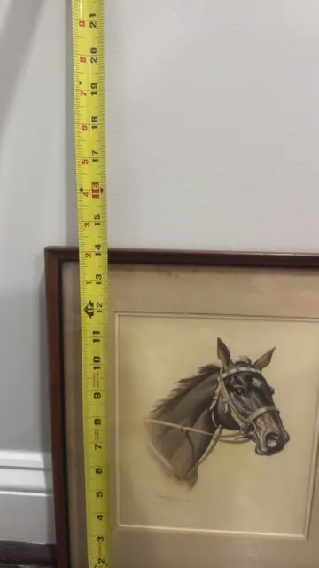

Paintings & Prints
Portrait of a Horse
· 19th century
Price Upon Request










About the Item
A noble horse's head in profile, bridled and alert, rendered in soft sepia tones with a draftsman's precision. This vintage equestrian print carries the quiet dignity of a stable favourite, matted and framed in dark wood for a traditional study or library. A classic sporting-art subject with old-world patina. Signature lower left reads 'Koekkoek' with a '19' date fragment (enlarged crop), but no documented horse-head work by a Koekkoek artist could be found — the Koekkoek family is recorded for marine/landscape works, so identity cannot be confirmed and artist is listed as Unknown per rule. Back label reads 'David Bendann's Fine Art Rooms, 105 East Baltimore St., Baltimore — Established 1859' (framer/gallery label, not artist evidence). Only the height (~13 in / 33 cm) was partially visible on the tape — full dimensions not legible. Signature detail: Signed lower left 'Koekkoek' (identity unconfirmed).
Details
- Creation Year:
- 19th century
- Medium:
- Vintage lithographic print
- Period:
- 19Th
- Condition:
- Offered in the condition shown in the photographs.
- Reference Number:
- VO-300